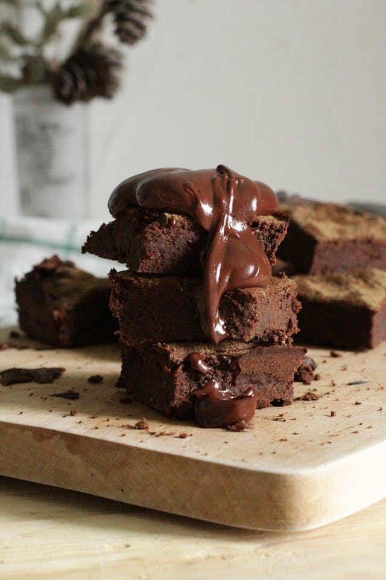

Home
Brownies

Description
These brownies are rich, fudgy, and irresistibly chocolatey — perfect for a quick dessert or a cozy treat. You only need one bowl and about 30 minutes from start to finish!
Ingredients
- 1/2 cup unsalted butter, melted
- 1 cup granulated sugar
- 2 large eggs
- 1 teaspoon vanilla extract
- 1/3 cup unsweetened cocoa powder
- 1/2 cup all-purpose flour
- 1/4 teaspoon salt
- 1/4 teaspoon baking powder
Steps
- Preheat your oven to 350°F (175°C) and grease or line an 8×8-inch baking pan with parchment paper.
- In a medium bowl, whisk together the melted butter, sugar, eggs, and vanilla until smooth.
- Stir in the cocoa powder, flour, salt, and baking powder until just combined—don’t overmix.
- Fold in chocolate chips or nuts if you’d like.
- Pour the batter into the prepared pan and spread it evenly.
- Bake for 20–25 minutes, or until a toothpick inserted in the center comes out with a few moist crumbs.
- Let the brownies cool in the pan before slicing into squares and serving.